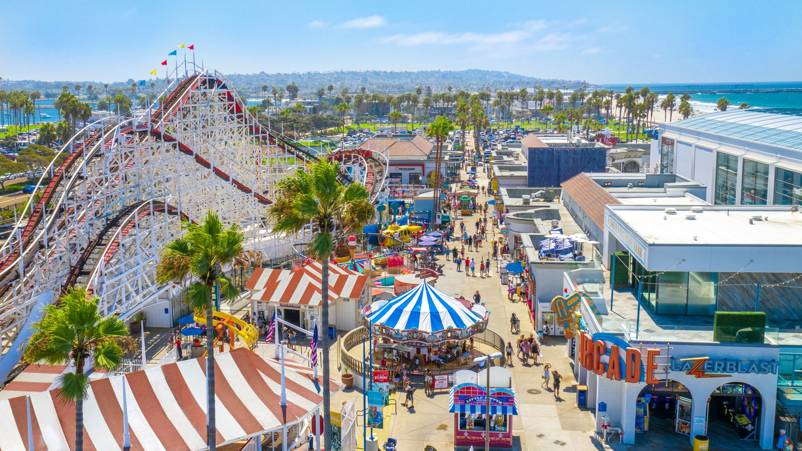

Belmont Park is a historic beachfront amusement park located in San Diego, California. Founded in 1925, the park has become a popular destination for tourists and locals alike, featuring a variety of attractions and activities for all ages. The centerpiece of the park is the iconic Giant Dipper roller coaster, a wooden coaster that has been in operation since 1925 and is recognized as a National Historic Landmark. Other popular rides and attractions include the Beach Blaster, Control Freak, and Vertical Plunge. With its rich history and fun-filled atmosphere, Belmont Park remains a beloved destination for visitors to San Diego.

Coachella is a world-renowned music and arts festival that takes place annually in Indio, California. Founded in 1999, the festival has become one of the most popular and influential cultural events in the world, attracting over 250,000 people each year. Known for its diverse lineup of musicians, artists, and performers from all genres and backgrounds, Coachella has helped to launch the careers of many up-and-coming artists and has also featured some of the biggest names in music history. In addition to its music performances, the festival also showcases a variety of art installations, food and beverage vendors, and other cultural exhibits, making it a truly immersive experience for attendees.